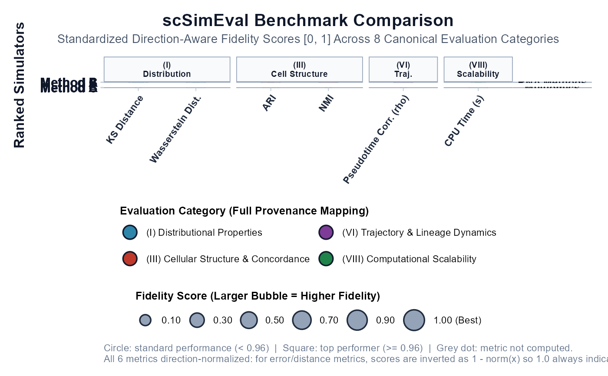

Plot Multi-Dimensional Benchmarking Bubble Matrix
Source:R/10_visualizations.R
plot_benchmark_bubble_matrix.RdProduces the flagship 600 DPI multi-dimensional benchmarking bubble matrix following Nature/Cell benchmarking study conventions. Methods appear as rows; evaluation metrics appear as columns grouped under the eight canonical evaluation categories (I-VIII) displayed as colored header strips at the top.
Usage
plot_benchmark_bubble_matrix(
data,
method_classes = NULL,
category_colors = NULL,
metrics_order = NULL,
methods_order = NULL,
rank_methods = TRUE,
compact_strips = TRUE,
normalize_scores = TRUE,
show_missing_dots = TRUE,
bubble_size_range = c(2, 7.8),
title = NULL,
subtitle =
"Standardized Direction-Aware Fidelity Scores [0, 1] Across 8 Canonical Evaluation Categories",
base_size = 11,
show_score_labels = FALSE
)
plot_bubble_matrix(
data,
method_classes = NULL,
category_colors = NULL,
metrics_order = NULL,
methods_order = NULL,
rank_methods = TRUE,
compact_strips = TRUE,
normalize_scores = TRUE,
show_missing_dots = TRUE,
bubble_size_range = c(2, 7.8),
title = NULL,
subtitle =
"Standardized Direction-Aware Fidelity Scores [0, 1] Across 8 Canonical Evaluation Categories",
base_size = 11,
show_score_labels = FALSE
)Arguments
- data
Input data. One of:
An
scSimEval_consolidatedobject fromevaluate_multiple_datasets().A named list of benchmark outputs from
evaluate_simulation_accuracy().A tidy
data.framewith columns:Method,Metric,Category, andScore(orValue).
- method_classes
Optional named list mapping method names to row group labels. E.g.
list("Unimodal" = c("Method A", "Method B"), "Multiomics" = "Method C").- category_colors
Optional named character vector to override the canonical palette.
- metrics_order
Optional character vector for explicit metric ordering (left to right).
- methods_order
Optional character vector for explicit method ordering (top to bottom).
- rank_methods
Logical. Automatically rank methods along the vertical axis by mean overall fidelity score. Default
TRUE.- compact_strips
Logical. Use compact two-line facet strip titles for clean horizontal layout. Default
TRUE.- normalize_scores
Logical. Normalize raw distances into [0, 1] fidelity scores. Default
TRUE.- show_missing_dots
Logical. Show grey dots for missing metric combinations. Default
TRUE.- bubble_size_range
Numeric vector of length 2: min and max bubble size. Default
c(2.0, 7.8).- title
Character. Main plot title. If
NULL, dynamically derived from metric count.- subtitle
Character. Plot subtitle.
- base_size
Numeric. Base font size. Default
11.- show_score_labels
Logical. Annotate bubbles with numeric score. Default
FALSE.
Details

Bubble encoding:
Size: Normalized fidelity score [0, 1] – larger = better performance.
Fill color: Evaluation category (one of the eight canonical groups).
Circle (shape 21): Regular performance (score < 0.96).
Square (shape 22): Top performer (score >= 0.96).
Small grey dot: Metric not available/computed for that method.
Score normalization is direction-aware: distance/error metrics are inverted so that 1 always means best performance, while concordance/correlation metrics are used directly (higher = better).
Examples
# Synthetic demo covering multiple categories
set.seed(42)
demo_df <- data.frame(
Method = rep(c("Method A", "Method B", "Method C"), each = 6),
Category = rep(c("(I) Distributional Properties",
"(I) Distributional Properties",
"(III) Cellular Structure & Concordance",
"(III) Cellular Structure & Concordance",
"(VI) Trajectory & Lineage Dynamics",
"(VIII) Computational Scalability"), 3),
Metric = rep(c("KS Distance", "Wasserstein Dist.", "ARI", "NMI",
"Pseudotime Corr. (rho)", "CPU Time (s)"), 3),
Score = runif(18, 0.3, 1.0)
)
p <- plot_benchmark_bubble_matrix(demo_df,
title = "scSimEval Benchmark Comparison",
method_classes = list("RNA Methods" = c("Method A", "Method B"),
"Multiomics" = "Method C"))
if (requireNamespace("ggplot2", quietly = TRUE)) print(p)
